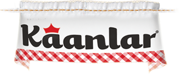

-
 Whole Plant Automation
Whole Plant Automation
- Spring Water Quality Check
- Distribution Rooms
- SCADA Data Acquisition
- Syrup Pasteurizer
- Cold CIP System
- Mechanical Installations and Piping
-
Whole Plant Automation
- Spring Water Quality Check
- SCADA Data Acquisition
- Cold CIP System
- Product Distribution Lines to Filling Lines
- Signaling to Filtering and Ozonation Systems
- Pump Groups Automation and Co-Aging in Pumps
- Mechanical Installations and Piping
-

Brine Preparation Unit
- Brine Preparation Lines
- Brine Concentration Control
- Mixproof Valve Groups
- Brine Pasteurizer
- Brine Sending and Collecting Lines
- SCADA Data Acquisition (SQL Server)
- Production Reporting
- Central CIP System
- Counting Valve on-off Times and Pump Working Times for Maintenance
- Mechanical Installations and Piping
-
Process Unit Automations
- Honey, Jam, Chocolate Products Preperation and Sending to Filling Machine
- Brine Sending Lines to Brine Filling Machines and CIP System Integration
-
 Process Unit Automations
Process Unit Automations
- Yoghurt Filling Machine Commissioning
- Milk Powder Filling Machine Commissioning
-
4 Lines Central CIP System Automation
- System Design and Supervision
- Control and Data Acquisition by SCADA
- Reporting
- Signalling with Filling Machines and Processing Unit in Plant (Digital or Network Fielbus)
- Special CIP Routines According to Filling Machine
-
Process Unit Automations
- Yoghurt Filling Machine Commissioning
-
Single Machine Automations
- Lots of Yarn Steaming Machines Automation and Commissioning